7 Trust and Its Limits
7.1 Hallucination and Trust
§6.1 ended on an assumption that none of its methods tested. Retrieval put real documents in front of a frozen model, tools let it check its own arithmetic, and the model could still produce a statement that was in neither its weights nor its context, in the same fluent register it uses for everything else. This section asks why a model states what it has no source for, how often it must do so, and how such statements can be detected from outside. The answer has three parts. The training objective never compares a statement with the world. The evaluations that decide which model is released reward a guess over an admission of ignorance. And the probabilities inside the model carry more information about its own reliability than the text it emits, which is what makes detection possible.
The cost is easiest to see in a case with a court record. In 2023 a lawyer in New York filed a brief in Mata v. Avianca, a personal-injury suit against an airline, opposing a motion to dismiss. The brief cited six decisions as precedent, among them Varghese v. China Southern Airlines, Shaboon v. EgyptAir and Petersen v. Iran Air. The names had plausible parties, plausible courts and the format every brief uses. Opposing counsel could not find them, and neither could the court. The citations had been produced by ChatGPT, and when the lawyer asked it whether Varghese was a real case, it said that it was. On 22 June 2023 Judge P. Kevin Castel of the Southern District of New York imposed sanctions of $5,000 under Rule 11 on the two attorneys and their firm, jointly and severally (United States District Court for the Southern District of New York 2023).
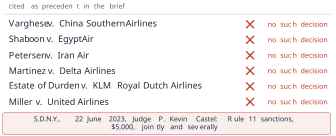
What makes the case instructive is not that the model was wrong. Every model is sometimes wrong. It is that the six invented citations were indistinguishable, on the page, from six real ones, and that the model’s answer to a direct question about them was as confident as its answer to a question it could answer.
Definition 7.1 (Definition) A hallucination is a statement produced by a language model that is fluent and presented as fact but is not supported by the source it should rest on. A statement that contradicts or goes beyond a passage placed in the context is an unfaithful statement, or grounded hallucination. A statement that has no support anywhere, neither in the training data nor in the context, as in Figure 7.1, is a fabrication.
The distinction comes from the study of summarisation. Joshua Maynez and colleagues at Google presented it at the Annual Meeting of the Association for Computational Linguistics (ACL) in 2020 (Maynez et al. 2020). They separated intrinsic hallucinations, which misrepresent the source document, from extrinsic ones, which add information the source does not contain. Both kinds are measured against a source that was there, so in the terms of Definition 7.1 both are unfaithful: the “contradicts” and the “goes beyond” of the definition. A fabrication is what remains when there is no source to be faithful to. They also found that human-written reference summaries themselves contained extrinsic material, and that models trained on them reproduced it. The two failures have different remedies. An unfaithful statement is a failure to use a context that held the answer: §6.1 described one cause of it, the loss of accuracy when the relevant passage sits in the middle of a long context (Figure 6.7), and the retrieval pipeline of Definition 6.3 is the setting in which it arises. A fabrication is a failure with no context to blame. It is the main subject of this section, and retrieval narrows it only where retrieval finds something. A third case is not a hallucination at all. A model asked about an event after its training cutoff may answer from a world that has since changed. Its statement was once supported, and §6.1 treated it as a gap in knowledge.
What the objective scores
A language model is pre-trained on pairs taken from its corpus. Each pair is a prefix \(x_{<t}\) and the token \(x_t\) that some writer placed after it. The model, the function \(f_\theta\) with parameters \(\theta\), maps the prefix to a distribution over the vocabulary, and the loss takes from that distribution one number, the probability of the token that was written:
\[ \mathcal{L}(\theta) = -\sum_{t=2}^{T} \log P\left(x_t \mid x_{<t} ; \theta\right) . \tag{7.1}\]
This is the negative of the objective Equation 3.27 of §3.3, written as a loss to be minimised. Its arguments are the parameters \(\theta\), the token that was written and the tokens before it. That is the complete list. A sentence of the corpus that is false contributes to Equation 7.1 exactly as a true one does, and a model that assigns high probability to it is rewarded in the same way. §3.3 drew the consequence for a single prompt and cited TruthfulQA, on which the best model tested was truthful on 58 per cent of questions against 94 per cent for people (Lin et al. 2022). The present section asks the next question. If the objective scores the probability of text rather than truth, which statements does a model that has minimised it get wrong?
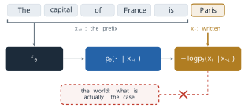
Truth enters only through correlation. Where most of the text that completes a prefix is correct, as for The capital of France is, minimising Equation 7.1 concentrates probability on the correct token, and the model states a fact. Where the corpus says little, the same minimisation produces something else. The parameters of a model are far smaller than its corpus: a few hundred gigabytes of weights against terabytes of text. Training is therefore a lossy compression of the corpus, in the same sense that §5.2’s quantisation was a lossy compression of the weights (Definition 5.10). A pattern that recurs on many pages survives compression. A detail stated once does not, and what survives in its place is the shape of such details: that symposia have chairs, that chairs of a Georgian symposium have Georgian surnames, that a case name has two parties and a court.
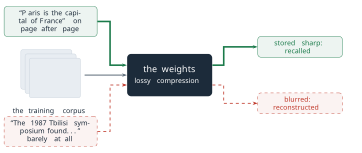
Asked for such a detail, the model does not fail visibly. It conditions on the prefix by Equation 6.1, as it always does, and samples a token from whatever distribution the compressed weights produce. The output is a reconstruction, and it is written in the same register as a recall.
This needs one precision, because it is easy to state too strongly. The distribution the model computes for a well-supported prefix and for a poorly supported one need not have the same shape. For a fact stated on many pages the distribution is usually peaked on one answer. For a fact stated once or never it is often spread across several plausible answers, and later in this section we measure that spread and use it. What does not differ is the emitted text. Sampling returns one token from either distribution, and the probability that token had is not printed beside it. A reader of The 1987 Tbilisi symposium was chaired by Kiknadze, an invented example that this section will reuse, cannot tell whether Kiknadze had probability 0.9 or 0.2. The information that would separate a recall from a reconstruction exists inside the model and is discarded at the moment of sampling.
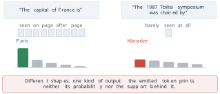
How much support a fact needs
The compression picture predicts that a model’s accuracy on a question should rise with the number of times its corpus states the answer. Nikhil Kandpal and colleagues measured this, presented at the International Conference on Machine Learning (ICML) in 2023 (Kandpal et al. 2023). The hard part was the count. They ran an entity linker over entire pre-training corpora (The Pile, the English part of ROOTS, C4, OpenWebText and Wikipedia), and for each question of a question-answering benchmark counted the documents in which an entity of the question and an entity of its answer appear together. That count is a measurable stand-in for how much support the corpus gives a fact. Their assumption is that co-occurrence in a document is what support means. A document can mention both entities without stating the fact, and a fact can be stated without naming both.
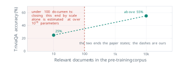
For BLOOM, an open model of 176 billion parameters, accuracy on TriviaQA rose from 25 per cent for questions with about ten relevant documents to above 55 per cent for questions with about ten thousand. The relationship held across model sizes and across the corpora they linked. Larger models did better at every count, so the authors asked how large a model would have to be to close the gap on the rare questions alone. Extrapolating their fits, they estimated that matching a strong supervised baseline on Natural Questions items with fewer than 100 relevant documents would need a BLOOM model with over \(10^{18}\) parameters. That is more than five million times the size of the model they measured (\(10^{18} / 1.76 \times 10^{11} \approx 5.7 \times 10^{6}\)). They also found, with a BM25 retriever on Natural Questions, that a retrieval-augmented model outperformed its closed-book counterpart at every document count, and by most on the rare questions. On the long tail of a corpus, retrieval in the sense of Definition 6.3 does what scale cannot do at any affordable size.
Figure 7.5 says which facts a model gets wrong. It does not say how far a better training run could push the error down. That needs a bound.
A floor under the error
Adam Tauman Kalai, Ofir Nachum, Santosh Vempala and Edwin Zhang, from OpenAI and the Georgia Institute of Technology, gave one. Their analysis appeared as a preprint in September 2025 and was published in Nature in April 2026 (Kalai et al. 2026). They reduce generation to classification. A model that generates valid statements can be used to decide whether a given statement is valid, so its generation error is bounded below, up to a factor of two and small correction terms, by the error of that decision problem. For one class of facts the decision problem has an error that no learner can avoid.
Definition 7.2 (Definition) An arbitrary fact is a fact whose value has no pattern that could be learned from other facts of the same kind, such as the birthday of a particular person. The singleton rate of a body of training data is \[ \mathrm{sr} = \frac{N_1}{N} , \tag{7.2}\] where \(N\) is the number of training examples (mentions of facts of the kind in question) and \(N_1\) is the number of examples whose prompt, such as one person’s name, appears exactly once among them.
The intuition behind the bound is older than language models. In 1953 the statistician Jack Good, building on work with Alan Turing during the war, asked how much probability a sample leaves for species it has never seen (Good 1953). His answer was that the total probability of the unseen species, the missing mass, is estimated by the fraction of the sample made up of species seen exactly once, \(N_1/N\). The reason is short, and exercise 8 works it through on ten mentions. Remove one example from the sample and ask whether it is new relative to the rest. It is new exactly when it was a singleton, so the singletons are the sample’s own record of how often a fresh draw is something not yet seen.
Apply that to arbitrary facts. A question drawn from the same distribution as the training data will, with probability about \(\mathrm{sr}\), be about a fact the model never saw, and the facts seen exactly once are the sample’s evidence for how large that share is. For an arbitrary fact an unseen one gives nothing to generalise from, and a single mention gives little more. A model that never abstains must still answer, and its answers on that share of questions are guesses among many plausible values. Kalai and colleagues prove the formal version (their Theorem 2): with probability at least 0.99 over the training data, any learning algorithm produces a base model whose error rate on such facts satisfies
\[ \mathrm{err} \;\geq\; \mathrm{sr} - \frac{2}{\min_c \lvert \mathcal{E}_c \rvert} - \frac{35 + 6 \ln N}{\sqrt{N}} - \delta , \tag{7.3}\]
where \(\lvert \mathcal{E}_c \rvert\) is the number of wrong answers available for prompt \(c\), and \(\delta\) measures how far the model is from calibrated, in a specific sense the paper defines; the general notion of calibration is defined later in this section (Definition 7.3). The paper’s \(\delta\) is related to the expected calibration error of Equation 7.8 but is not the same quantity, and here it needs only one property: it is zero for a calibrated model. For a large training set, many possible wrong answers and a calibrated model, the three subtracted terms are small, and the bound reads approximately
\[ \mathrm{err} \;\gtrsim\; \mathrm{sr} . \tag{7.4}\]
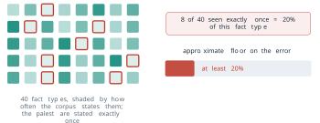
Their own illustration is the one in Figure 7.6: if 20 per cent of birthday facts appear exactly once in the pre-training data, a base model is expected to state a wrong birthday on at least 20 per cent of them. The figure counts the fraction over fact types, as their sentence does. Equation 7.2 counts it over training examples. The two coincide only when no fact is stated more than once, and otherwise the rate over examples is the smaller. The difference matters because error is measured on questions drawn like the training data, so a fact stated a hundred times is also asked about a hundred times as often. A worked case in the units of Equation 7.2: take \(N = 1{,}000{,}000\) mentions of birthdays, of which 200,000 belong to people mentioned exactly once. Then
\[ \mathrm{sr} = \frac{200{,}000}{1{,}000{,}000} = 0.20 , \tag{7.5}\]
and by Equation 7.4 a calibrated base model trained on this corpus errs on at least about one birthday question in five, however it was trained. The size of the corpus matters for the formal version. At this \(N\) the third subtracted term of Equation 7.3 is \((35 + 6 \ln 10^6)/10^3 \approx 0.12\). The second term is small for birthdays: with 365 possible days, every prompt has 364 wrong answers, and \(2/364 \approx 0.005\). The fourth, \(\delta\), is zero for a calibrated model. So the guaranteed floor is nearer \(0.08\) than \(0.20\). At \(N = 1{,}000\) the same term is about \(2.4\), larger than any error rate, and the theorem guarantees nothing. The approximation Equation 7.4 describes the regime of very large training sets. Exercise 3 shows how far the two ways of counting can differ.
Three features of Equation 7.3 matter more than its constants. First, the parameters of the model do not appear in it, and neither does the architecture or the length of training. It is a property of the corpus. Second, it applies to arbitrary facts. Where a pattern exists, such as the rules of arithmetic or the spelling of a word, a model can be right about cases it has never seen, and the bound says nothing. Third, it is a bound on a calibrated base model that answers every question. A model whose confidences are badly wrong (large \(\delta\)) escapes the bound by being miscalibrated, which is no improvement. A model that abstains on the questions it cannot answer escapes it by not answering, which is. Within the theorem’s model, the way to lower the floor while still answering is to change the corpus, so that fewer facts are singletons. Retrieval lies outside that model: it supplies the fact at the time of the question, and so does not face the bound in the same form. The way to stop the floor turning into wrong statements is abstention, and that is where the second half of the argument begins.
Why a model answers anyway
The singleton bound explains why a base model cannot know some facts. It does not explain why a deployed assistant, after the post-training of §5.1, still answers instead of saying that it does not know. Kalai and colleagues locate the cause in how models are evaluated.
Most benchmarks score an answer by a rubric with three rows. A correct answer scores 1, a wrong answer scores 0, and an abstention such as I don’t know also scores 0. Suppose a model would be right with probability \(p\) if it answered. Its expected score is
\[ \mathbb{E}[\text{answer}] = p \cdot 1 + (1 - p) \cdot 0 = p , \qquad \mathbb{E}[\text{abstain}] = 0 . \tag{7.6}\]
For every \(p > 0\), answering has the higher expected score. A guess with one chance in twenty of being right is worth 0.05, and an honest abstention is worth nothing. The rubric cannot tell a confident falsehood from an admission of ignorance, since both score zero, and it pays something for any guess at all. A student taking an examination without negative marking faces the same rubric and draws the same conclusion. A model trained or selected against such scores learns the same policy, with no intent to deceive, because guessing is the optimal strategy under the rules it is scored by.
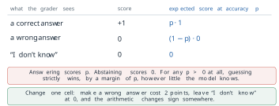
The rubric is not a caricature. Kalai and colleagues surveyed the evaluations that dominated public comparisons of models in 2025 and recorded how each one grades (1).
| Benchmark | Scoring method | Binary grading | Credit for I don’t know |
|---|---|---|---|
| GPQA | multiple-choice accuracy | yes | none |
| MMLU-Pro | multiple-choice accuracy | yes | none |
| IFEval | programmatic instruction verification | yes (composite of binary sub-scores) | none |
| Omni-MATH | equivalence grading | yes | none |
| WildBench | rubric graded by a language model | no | partial |
| BBH | multiple choice or exact match | yes | none |
| MATH (level 5) | equivalence grading | yes | none |
| MuSR | multiple-choice accuracy | yes | none |
| SWE-bench | patch passes the unit tests | yes | none |
| HLE | multiple choice or equivalence grading | yes | none |
Nine of the ten grade right or wrong and give nothing for an abstention. The tenth gives partial credit, but on a scale that can rank a hallucinated answer above an honest refusal. A laboratory that reports these scores, and selects among checkpoints by them, selects for guessing. The authors therefore argue that the remedy is socio-technical rather than architectural. They do not propose a new loss or a new model, and they argue that yet another hallucination benchmark, added beside the ones that decide rankings, would not suffice while those reward guessing. They propose changing the scoring of the existing ones.
The change is one cell of the rubric. Let a wrong answer cost \(c > 0\) points, and leave a correct answer at 1 and an abstention at 0. Answering is now worth \(p \cdot 1 + (1 - p)(-c)\), and it beats abstaining when
\[ p - c\,(1 - p) > 0 \iff p\,(1 + c) > c \iff p > \frac{c}{1 + c} . \tag{7.7}\]
The threshold is a property of the penalty and not of the model. With \(c = 2\) it is \(p > 2/3\): a model should answer only when it is at least about 67 per cent sure, and below that an abstention scores higher in expectation. With \(c = 0\) the threshold is \(p > 0\), which is the binary rubric again. Kalai and colleagues state the rule in the other direction, as an instruction placed in the evaluation itself: answer only if more than \(t\) confident, since a mistake costs \(t/(1 - t)\) points. Setting \(c = t/(1 - t)\) in Equation 7.7 gives \(c/(1 + c) = t\), so the two forms are the same rule. Their point is that the target should be stated openly, so that a model has one well-defined best behaviour at each confidence and abstention is rewarded exactly where it should be.
Equation 7.7 assumes something that has not yet been established: that the model’s \(p\) means what it says. A threshold on confidence is useful only if the confidence is honest.
Calibration
Definition 7.3 (Definition) A model is calibrated if, among all the answers to which it assigns confidence \(q\), the fraction that are correct is \(q\), for every \(q\). A reliability diagram plots, for groups of answers with similar confidence, the accuracy of each group against its mean confidence; a calibrated model lies on the diagonal.
Calibration is not accuracy. A model that is right on 60 per cent of questions and says 60 per cent each time is perfectly calibrated, and a model that is right on 90 per cent and always says 100 per cent is not. To turn the diagonal into one number, sort \(N\) answers into bins \(b\) by stated confidence, and compare each bin’s mean confidence \(\mathrm{conf}(b)\) with its accuracy \(\mathrm{acc}(b)\). With \(n_b\) the number of answers in bin \(b\), the expected calibration error weights each bin’s gap by the share of answers in it, \(n_b/N\):
\[ \mathrm{ECE} = \sum_b \frac{n_b}{N} \, \bigl\lvert \mathrm{acc}(b) - \mathrm{conf}(b) \bigr\rvert . \tag{7.8}\]
Mahdi Pakdaman Naeini, Gregory Cooper and Milos Hauskrecht introduced the measure at the AAAI Conference on Artificial Intelligence in 2015 (Naeini et al. 2015). Chuan Guo and colleagues made it standard for neural networks at ICML in 2017 (Guo et al. 2017). They showed that modern deep classifiers were markedly overconfident. Dividing the logits by a single temperature fitted on held-out data, the operation of Equation 3.34 in §3.3, largely repaired it. The measure assumes that a probability over answers is a fair stand-in for the model’s belief, and its value depends on the choice of bins.
A worked bin shows the arithmetic. Collect the 100 answers to which a model assigned confidence 0.80, and suppose 62 of them were right. Then \(\mathrm{acc}(b) = 62/100 = 0.62\) and the gap is \(\lvert 0.62 - 0.80 \rvert = 0.18\): on these questions the model was 18 points more confident than its record justified. If these 100 answers were a fifth of a test set of \(N = 500\), this bin alone would add \(0.2 \times 0.18 = 0.036\) to the ECE. The bin is a stipulated example, chosen for its arithmetic, not a measurement.
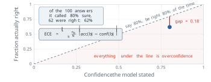
The measured numbers come from OpenAI’s technical report on GPT-4 in 2023 (OpenAI 2023). Its Figure 8 shows reliability diagrams on a subset of the MMLU benchmark (Massive Multitask Language Understanding) for two checkpoints of one model, before and after post-training. The pre-trained checkpoint had an ECE of 0.007. The post-trained checkpoint, after the reinforcement learning from human feedback of Definition 5.4, had 0.074. The difference is
\[ 0.074 - 0.007 = 0.067 , \qquad \frac{0.074}{0.007} \approx 10.6 , \tag{7.9}\]
so post-training multiplied the calibration error by more than ten, measured the same way on the same questions. The report’s own text says that after post-training the calibration is reduced.
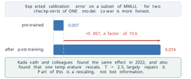
The result has an honest boundary. Saurav Kadavath and colleagues at Anthropic reported in 2022 that models trained with reinforcement learning from human feedback appeared, naively, very miscalibrated, and that a single temperature adjustment, \(\tau = 2.5\) for all their evaluations, largely fixed the calibration on several independent tasks (Kadavath et al. 2022). Part of what post-training did is therefore a rescaling of the probabilities rather than a loss of the information in them. The same paper reported the encouraging half of the picture: large pre-trained models were well calibrated on multiple-choice questions in the right format, and could be trained to predict, before answering, whether they would answer correctly.
Two consequences follow for hallucination. The first is that the information needed to abstain often exists. A pre-trained model’s probability over answers tracks its accuracy closely, which is why the spread of the distribution in the long-tail case was described earlier as measurable. The second is that the information is not in the text. A calibrated probability is a number inside the model, and a sentence sampled from it carries none of it. The detectors that follow recover that number from outside.
Detecting a fabrication by sampling
Suppose a system can see neither the weights nor the token probabilities, and has no database to check against. All it can do is send a prompt and receive a sampled answer, which is all that many commercial interfaces expose. Potsawee Manakul, Adian Liusie and Mark Gales, at the Conference on Empirical Methods in Natural Language Processing (EMNLP) in 2023, observed that this is enough (Manakul et al. 2023). If a model holds a fact, its distribution is peaked on it, and independent samples at a normal temperature keep returning it. If the model is reconstructing, its distribution is spread across plausible values, and samples disagree. Their method, SelfCheckGPT, compares each sentence of a response with several further samples drawn for the same prompt, and scores the sentence as likely invented when the samples do not support it. The assumption is the one stated: that a held fact is sampled consistently and a reconstructed one is not.
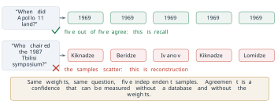
Counting agreement by comparing strings has a flaw. Ask where Apollo 11 landed and sample five answers: the Sea of Tranquility, Mare Tranquillitatis, the Tranquility Base site, the Ocean of Storms, Oceanus Procellarum. The five strings are all different, so a string comparison finds no agreement and flags the answer. But three of the five name one place in different words, and two name another (where Apollo 12 landed). The Tranquility Base site is a point within the sea, and as an answer to where the craft landed we count it with the other two; a strict entailment test could split it off, a reminder that the clusters depend on the judge. What should be counted is agreement in meaning.
Definition 7.4 (Definition) Given \(M\) sampled answers to one question, group them into meaning clusters, such that two answers are in the same cluster when each entails the other. With \(p(c)\) the fraction of samples in cluster \(c\), the semantic entropy of the question is \[ H_{\mathrm{sem}} = -\sum_{c} p(c) \log p(c) . \tag{7.10}\]
The sum runs over clusters, not over samples or tokens. Changing what the sum runs over changes what the number means. Entailment in both directions is the test of same meaning, and it is decided by a natural-language inference model or by a language model asked whether one answer follows from the other. Lorenz Kuhn, Yarin Gal and Sebastian Farquhar introduced semantic entropy at the International Conference on Learning Representations (ICLR) in 2023 (Kuhn et al. 2023), and Farquhar, Jannik Kossen, Kuhn and Gal showed in Nature in 2024 that it detects a class of fabrications, which they called confabulations, across question answering, biography generation and several models (Farquhar et al. 2024). Their general estimator weights each cluster by the probabilities of its sequences. When those probabilities are not available, the fraction of samples per cluster used in Equation 7.10 is their discrete variant.
For the Apollo samples the clusters have \(p = 3/5\) and \(p = 2/5\). With natural logarithms, so that entropy is measured in nats,
\[ H_{\mathrm{sem}} = -\left( \tfrac{3}{5} \ln \tfrac{3}{5} + \tfrac{2}{5} \ln \tfrac{2}{5} \right) = -\left( 0.6 \times (-0.511) + 0.4 \times (-0.916) \right) = 0.3065 + 0.3665 = 0.673 \text{ nats.} \tag{7.11}\]
Zero means one meaning. The largest possible value for five samples, five different meanings, is \(\ln 5 = 1.609\) nats. A value of 0.673 says the model gave two incompatible answers to one question, however fluent each one was, and a system would flag the answer or abstain. Had all five samples named the Sea of Tranquility in five wordings, there would be one cluster with \(p = 1\), and \(H_{\mathrm{sem}} = -1 \cdot \ln 1 = 0\): the model would be as consistent as this measure can record, although a string comparison would have flagged it.
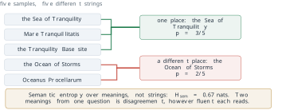
Every sampling detector reads agreement, and agreement is not truth. Return to Mata v. Avianca. A model asked several times when Varghese v. China Southern Airlines was decided may give the same year every time. The citation invented in the brief placed the case in the Eleventh Circuit in 2019. Nothing about the reconstruction is uncertain from the model’s side. The weights represent sharply what such a case looks like, and they produce the same fiction on every draw. Its semantic entropy is zero, and the detector passes it.
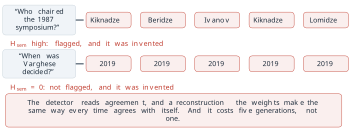
This is the failure of the assumption behind Definition 7.4. Consistency is evidence of recall when the only alternative is a broad reconstruction. It is no evidence against a systematic error, which a model can learn as consistently as a fact: a misconception repeated across its corpus, as in TruthfulQA, or a confident pattern completed the same way each time. The detector also has a direct price. Five samples cost five generations, and the clustering adds pairwise entailment checks, about \(M(M-1)\) of them for \(M\) samples in the worst case. A system that checks every answer pays several times the inference bill of one that does not, for a check that cannot see one class of error at all.
Mitigation, and what remains
No single method closes the gap between what a model states and what is supported, but four methods, applied in sequence, each narrow it, and each leaves a characteristic residue. They are best read as rungs of a ladder, starting from the position of the lawyer in Mata v. Avianca, with nothing between the model’s sentence and the reader. Figure 7.13 shows the four rungs described below.
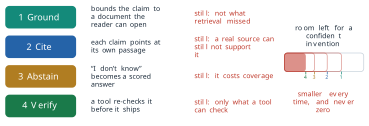
The first rung is grounding. Retrieval (Definition 6.3) places a passage in the context and conditions the answer on it, which turns many fabrications into statements that can be checked against a document (Lewis et al. 2020). As §6.1 recorded, it leaves two gaps. Retrieval can find nothing relevant. The model can also fail to use a passage that sits in the middle of a long context (Liu et al. 2024), as Figure 6.7 showed. The tempting alternative, writing the missing facts into the weights by fine-tuning, was shown in §6.1 to be the weakest route. Gekhman and colleagues found that facts new to the model were learned slowly and that the model’s tendency to state wrong answers rose as they were learned (Gekhman et al. 2024). In the terms of this section, fine-tuning on unfamiliar facts teaches a model to answer confidently about things its weights do not support. It also opens the door to the unfaithful statement of Definition 7.1, an answer that departs from a passage that held the right one.
The second rung is citation. Each claim points to the passage that supports it, so a reader can check it in seconds instead of hours. Citation does not make a claim true. A claim can cite a real source that does not say what the claim says, and that error is more persuasive than an unsupported claim, because the citation looks like evidence.
The third rung is abstention. A model is trained and evaluated under a rubric such as Equation 7.7, so that I don’t know scores better than a guess below a stated confidence. Its price is coverage. A model that abstains when it is unsure also abstains on some questions it would have answered correctly, and the threshold sets the trade between the two kinds of loss. Abstention is only as good as the confidence it thresholds, which is why calibration (Definition 7.3) and the sampling detectors of Definition 7.4 belong to this rung.
The fourth rung is verification. A tool rechecks a claim before it is shown, which is the agent loop of Definition 6.5 pointed at the model’s own output: a search for the cited case, a calculation rerun, a test executed. It checks only what a tool can check. A claim about a court decision can be looked up in a case database, and a claim about what a person intended cannot. Every tool observation is also text the model conditions on, with the risk §6.1 described in its Exercise 8.
Each rung removes a class of fabrication, and each can be measured. None reduces the remainder to zero, and the reason is structural rather than a matter of engineering effort. The computation that completes a sentence a user has started is the same computation that completes a citation the model has started. Generalising from what was seen to what was not is what makes a language model useful on questions nobody wrote down, and the same generalisation, applied to an arbitrary fact, produces Figure 7.1. There is no separate component doing the inventing that could be removed.
The argument of this section rests on assumptions that can fail in their turn. The singleton bound assumes arbitrary facts and a calibrated model, and real facts are seldom wholly arbitrary or wholly patterned. Document counts by entity linking measure co-occurrence, not support. Expected calibration error depends on its bins and on reading a probability over answer options as a belief, which is natural for multiple choice and much less so for free text. Sampling detectors assume that fabrication is inconsistent, and the consistent fabrication of Figure 7.12 is the counterexample. And the incentive argument assumes that evaluations shape what is released, which is plausible but has not been measured directly. Each of these methods is an instrument outside the model that recovers part of the information the emitted text discards. They make it possible to say how far a given answer should be trusted. They do not settle what a system should say when it does not know, who decides the threshold of Equation 7.7 for a clinical assistant or a legal one, or whose values a deployed model carries. Those questions are not questions of measurement, and the next section takes them up.
Exercises
Classify each case as an unfaithful statement, a fabrication, or a statement made out of date by the training cutoff (Definition 7.1). Then say which rung of the mitigation ladder would most likely have caught it. (a) A retrieved passage says a bridge opened in 1998, and the answer built on it says 1989. (b) A model trained on data up to 2024 states, in 2026, who holds an office that changed hands in 2025. (c) A model asked for sources on a narrow topic lists a journal article whose authors are real but which was never written. (d) A summary of a report adds a percentage that appears nowhere in the report.
Under the binary rubric of Equation 7.6, compute the expected score of answering and of abstaining for a model that is right with probability 0.05, and for one right with probability 0.30. Then use Equation 7.7 to find the confidence threshold for penalties \(c = 1\) and \(c = 3\), and the penalty that sets the threshold at 0.90.
A corpus contains 40 birthday facts. Eight of them are stated once, and each of the other 32 is stated five times. (a) What fraction of the fact types is stated exactly once? (b) Compute the singleton rate of Equation 7.2. (c) Questions are drawn the way the training mentions were. Which of the two numbers does Equation 7.4 say bounds the error rate, and why? (d) If the questions were instead drawn uniformly over the 40 people, which number would be the better guide to the error rate, and what does that say about a benchmark built from obscure entities?
A model answers 500 multiple-choice questions. Its answers fall into three confidence bins: 200 answers at mean confidence 0.90 with accuracy 0.75, 200 at 0.60 with accuracy 0.58, and 100 at 0.30 with accuracy 0.40. (a) Compute the ECE of Equation 7.8. (b) Which bin contributes most, and is the model over- or underconfident there? (c) The model’s overall accuracy is unchanged if every stated confidence is moved to its bin’s accuracy. What would its ECE then be, and why does calibration not change accuracy?
Five samples of one answer fall into meaning clusters of sizes 4 and 1. (a) Compute the semantic entropy of Equation 7.10 in nats. (b) A system flags any answer with \(H_{\mathrm{sem}} > 0.4\). Is this one flagged? Is the Apollo answer of Equation 7.11? (c) What is the largest semantic entropy five samples can have, and what pattern of answers produces it?
Temperature scaling divides the logits by \(\tau\) before the softmax, as in Equation 3.34. (a) For the logits \((2, 0, 0)\) over three answer options, compute the probability of the top option at \(\tau = 1\) and at \(\tau = 2.5\). (b) Show that dividing the logits by any \(\tau > 0\) leaves the most probable option unchanged. (c) Use (a) and (b) to explain how the single rescale reported by Kadavath and colleagues could repair an overconfident model’s calibration without changing which answers it gives.
- Show that if a wrong answer costs \(c = t/(1 - t)\), the threshold of Equation 7.7 is exactly \(t\). (b) Generalise Equation 7.7 to a rubric in which an abstention earns \(a \geq 0\) points and a wrong answer costs \(c\), which is negative if a wrong answer earns credit. (c) Use (b) to explain why the partial credit of WildBench
- does not, by itself, remove the incentive to guess.
- A sample of ten training mentions names the people A, A, B, C, C, C, D, E, F, F. Compute \(N_1\) and \(N_1/N\). (b) Remove each mention in turn and count how many of the ten are new relative to the remaining nine. Show that the count divided by \(N\) equals \(N_1/N\) in general, which is the leave-one-out argument behind Good’s estimate. (c) Explain why the bound Equation 7.3 says nothing about a fact type with a learnable pattern, such as the day of the week of a given date, and why a sampling detector (Figure 7.12) cannot rescue the arbitrary-fact case when a fabrication is consistent.
7.2 Ethics, Bias, and What We Do Not Know
§7.1 closed on questions that its instruments could not answer. One is what a system should say when it does not know. Another is who decides the threshold of §7.1 (Equation 7.7), the confidence above which a system should answer rather than abstain, for a clinical assistant or a legal one, and a third is whose values a deployed model carries. This section takes them up. They arise because a language model now sits between people and decisions, and it answers every one of them in the same even register. That register reads as neutrality. The section argues that neutrality is not available to a language model at any stage of its making, and shows the mechanism by which values enter at each stage. It then proves with published numbers that one of the most debated choices, between two definitions of fairness, is forced by arithmetic and cannot be avoided. What can be had in place of neutrality is legibility: each choice can be written down where it was made, and a reader can ask to see it.
Three documented cases show the decisions reaching people. In 2018 Reuters reported that Amazon had built a tool to rank job applications. It was trained on about ten years of applications the company had received, most of them from men. The tool learned to mark down applications that contained the word women’s, as in the captain of a women’s chess club, and to rank graduates of two all-women’s colleges lower. Amazon’s recruiters looked at its rankings without relying on them alone, and the team was disbanded once the company lost confidence in it (Dastin 2018). In 2023 the National Eating Disorders Association in the United States took down Tessa, a chatbot on its support service, after a user showed that it advised her to lose one to two pounds a week and to keep a daily calorie deficit. That advice feeds the condition the service exists to treat (Wells 2023). In the same year Weixin Liang and colleagues at Stanford ran seven widely used detectors of machine-written text on 91 essays written by non-native speakers for the Test of English as a Foreign Language (TOEFL) and on 88 essays by American eighth-grade students (Liang et al. 2023). The detectors were close to perfect on the native speakers’ essays. On the TOEFL essays their average false-positive rate was 61.22 per cent: most of the essays, all of them written by people, were flagged as written by a machine. Eighteen of the 91 were flagged by all seven detectors, and 89 by at least one.
The three cases fail at different points. In the first, nobody wrote a rule against women. The rule was in the record the tool was trained on. In the second, the fault lay in what the system was configured to do and what nobody had checked it would do. In the third, the essays the detectors flagged had low perplexity, and the authors suggested that the detectors penalise it: the plain, constrained prose of a writer in a second language has low perplexity, and raising it brought the false-positive rate down. Each is a decision somebody made, and its consequence fell on somebody else.
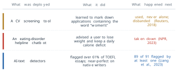
The corpus
The corpus is chosen before any training happens. Most large pre-training corpora begin from Common Crawl, an open crawl of the web that publishes statistics on each release. For the crawl CC-MAIN-2026-34, the primary language of each HTML page, as detected by Compact Language Detector 2 (CLD2), gives English 40.45 per cent of the pages, Russian 6.87, German 5.91, Japanese 5.25 and French 4.85 (Common Crawl 2026). The languages after the first five together make up the remaining 36.67 per cent, so English alone exceeds all of them combined, though not all languages other than English, which together hold 59.55 per cent. The population that speaks the languages is distributed differently. Ethnologue counts about 1.53 billion speakers of English in 2025, of whom about 390 million speak it as a first language (Eberhard et al. 2025). Against a world population of about 8.2 billion, that is about 19 per cent of people who speak English at all and about 5 per cent who speak it first.
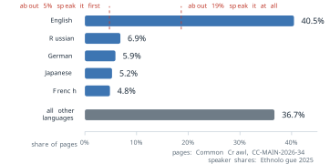
Figure 7.16 does not say the crawl is wrong. A crawl measures what was published, and publishing on the web is unevenly distributed across languages, countries and communities. It says that the corpus is a measurable choice, and that a model trained on it is compressed from the page shares of the figure, not from the speaker shares marked beside them.
The mechanism by which the choice reaches the weights is the one §7.1 described for facts. Training is a lossy compression of the corpus (Figure 7.3). A pattern that recurs on many pages survives compression and is stored sharply, and a pattern stated rarely is blurred. §7.1 measured the consequence for facts. Accuracy rises with the number of documents that support an answer (Figure 7.5). On the facts stated only once, the error cannot fall much below the singleton rate (Equation 7.4). Nothing in that mechanism distinguishes a fact from an association. If nurse and she occur together many thousands of times, the co-occurrence is a frequent pattern, and it is stored as sharply as a frequent fact. The model has not failed when it reproduces the association. The compression has worked. The same frequency argument applies to the languages of Figure 7.16. A language that makes up a small share of the corpus is in the long tail of Figure 7.5 as a whole, and the facts, idioms and conventions of its speakers are stored with the blur that §7.1 found for rare facts.
The geometry of word vectors, introduced in §1.2, shows the same thing in a form that can be drawn. The analogy of Equation 1.20 completes man is to king as woman is to ? with queen, because the offset from man to woman is close to the offset from king to queen (Figure 1.9). Tolga Bolukbasi and colleagues applied the same offset to occupation words at NIPS (now NeurIPS) in 2016, using word2vec vectors trained on Google News, and found that man is to computer programmer as woman is to homemaker (Bolukbasi et al. 2016). No rule placed the second analogy in the space. It is the same arithmetic as the first, applied to the same kind of regularity.
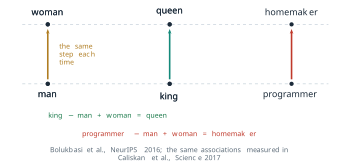
A single analogy is an anecdote, and analogies are a delicate instrument. Malvina Nissim, Rik van Noord and Rob van der Goot showed in Computational Linguistics in 2020 that the usual analogy query excludes the input words from the answer, so that man is to doctor as woman is to ? cannot return doctor even when doctor is the nearest vector. Some published bias analogies depend on that exclusion (Nissim et al. 2020). A measurement of association that does not depend on analogies came from Aylin Caliskan, Joanna Bryson and Arvind Narayanan, published in Science in 2017 (Caliskan et al. 2017). They adapted the Implicit Association Test of psychology, which measures how quickly people pair two sets of target words with two sets of attribute words, by replacing reaction time with cosine similarity.
Definition 7.6 (Definition) The Word Embedding Association Test (WEAT) compares two sets of target words \(X\) and \(Y\) (for example, male names and female names) with two sets of attribute words \(A\) and \(B\) (for example, career words and family words). The association of a word \(w\) with the attributes is \[ s(w, A, B) = \frac{1}{\lvert A \rvert} \sum_{a \in A} \cos(\mathbf{w}, \mathbf{a}) - \frac{1}{\lvert B \rvert} \sum_{b \in B} \cos(\mathbf{w}, \mathbf{b}) , \tag{7.13}\] and the effect size is the difference of the mean association of the two target sets, in units of the standard deviation of \(s\) over all target words: \[ d = \frac{\operatorname{mean}_{x \in X} s(x, A, B) - \operatorname{mean}_{y \in Y} s(y, A, B)} {\operatorname{std}_{w \in X \cup Y} s(w, A, B)} . \tag{7.14}\]
Applied to GloVe vectors trained on a web crawl, the test reproduced the associations from the psychological literature that the authors tested, among them the pairing of female names with family words and male names with career words. A companion test recovered, from the vectors alone, the share of women in each occupation in United States labour statistics: the more strongly an occupation word was associated with female words, the larger the share of women in that occupation. The assumption of the method is that cosine similarity in an embedding plays the role that reaction time plays in a person. The finding is the reason the defence that a model is “just mathematics” stopped being an answer: the mathematics is a faithful summary of the text, and the text carries the associations.
Filtering does not find a neutral point
If the corpus carries associations into the weights, the natural remedy is to filter the corpus, or to correct the representation after training. Each attempt moves the distribution, and none finds a point at which the distribution carries no values. Figure 7.18 shows three attempts and how each failed.
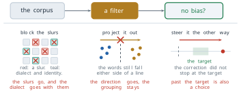
The first is a blocklist. The Colossal Clean Crawled Corpus (C4), on which T5 was trained, was built by dropping every page of a Common Crawl snapshot that contained any word from a public list of offensive words. Jesse Dodge and colleagues audited the result and presented it at the Conference on Empirical Methods in Natural Language Processing (EMNLP) in 2021 (Dodge et al. 2021). They found that blocklist filtering removed text from and about minority groups disproportionately. Pages written in African American English and Hispanic-aligned English were removed at higher rates than pages in white-aligned English, and so were pages that mentioned sexual orientations, many of which were not offensive. A list of words cannot tell a slur from a community writing about itself. The assumption of the filter was that the words on the list mark harmful documents, and the audit showed that they also mark the documents of the people the list was meant to protect.
The second is a correction to the representation. Bolukbasi and colleagues proposed one in the same paper that reported the analogy (Bolukbasi et al. 2016). They estimated a gender direction \(\mathbf{g}\), a unit vector found from the differences of pairs such as he and she, and removed the component of every gender-neutral word along it: \[ \mathbf{w}' = \mathbf{w} - (\mathbf{w}^{\top} \mathbf{g})\, \mathbf{g} . \tag{7.15}\] After the projection every neutral word has zero component along \(\mathbf{g}\), and in their evaluation the share of generated analogies that people judged stereotyped fell sharply. Hila Gonen and Yoav Goldberg showed at the Annual Conference of the North American Chapter of the Association for Computational Linguistics (NAACL) in 2019 that the bias was hidden, not removed (Gonen and Goldberg 2019). Words that had been socially marked as male or female before the projection still lay close to one another afterwards, and a simple clustering of the debiased vectors separated the two groups with high accuracy. The information was never confined to one direction. It was spread through the distances between words, and Equation 7.15 removed only the part that had been measured. The assumption of hard debiasing was that the bias is a direction, and the negative result is the one that matters: it is the reason a passing score on one bias test is not evidence that a representation carries no bias.
The third attempt steers outputs after training towards a target distribution. In February 2024 Google paused the generation of images of people in its Gemini application after it produced historically inaccurate images, such as racially diverse depictions of groups that were not diverse. Google stated that tuning intended to show a range of people had failed to account for cases that should not show a range, and that the model had become more cautious than intended (Raghavan 2024). The correction did not stop at its target. Overshooting is not a failure to be neutral. It is a second choice, made in the other direction, and it has its own authors.
The rankings and the policy
The second hidden argument enters at alignment. §5.1 described how a reward model is trained from pairs of answers that people ranked (Definition 5.3) and how the policy is then optimised against it (Definition 5.4). The rankings are given by a particular group of people. For InstructGPT, Ouyang and colleagues hired a team of about forty contractors, screened for their agreement with the researchers’ own judgements on sensitive prompts, and reported the team’s demographics in an appendix (Ouyang et al. 2022). Their ranking, one answer preferred to another, repeated many thousands of times, is the whole signal from which the reward model learns what better means.
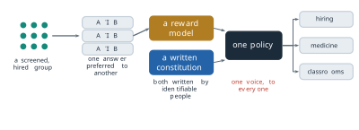
The work behind such pipelines is labour with a price. In January 2023 Time reported that workers in Kenya, employed by an outsourcing firm, were paid between about $1.32 and $2 an hour to read and label descriptions of violence and abuse. The labels were used to build a detector of toxic content for ChatGPT (Perrigo 2023). That labelling trained a safety filter rather than ranking answers for a reward model. It belongs to the same stage of the lifecycle and has the same property: what the deployed model treats as unacceptable was decided by named, paid people working to written instructions.
Constitutional AI (Definition 5.6, also from §5.1) moves part of this signal from rankings to a document. In place of human labels for harmlessness, a model critiques and compares answers against a list of written principles (Bai et al. 2022). Anthropic published the constitution used for its Claude models in May 2023. The company stated that its principles drew on the Universal Declaration of Human Rights, the terms of service of a technology company, the Sparrow principles of DeepMind and the company’s own research, with an attempt to include perspectives from outside Western, industrialised cultures (Anthropic 2023). A written constitution does not remove the values. It writes them down, which is what makes them available for argument.
Figure 7.19 also shows what the alignment stage compresses. Many raters and many judgements become one reward model, and the reward model becomes one policy. That one policy then answers a question about hiring, a question about medicine and a question from a classroom in the same voice. The disagreements among the raters, which were real, are reduced to one scalar reward per answer by the Bradley-Terry model of §5.1 (Equation 5.3), which turns a preference between two answers into a difference of two scores, and the policy sees only that scalar.
The third hidden argument enters at serving. A provider wraps the model in a system prompt and a refusal policy (§6.1), and both can change without any change to the weights. The clearest way to see the argument is a request space. Figure 7.20 places five requests on one axis from clearly acceptable to clearly harmful: summarising a paper, explaining how vaccines work, making the strongest case against the user’s own view, asking for the lethal dose of a drug, and asking how to synthesise a nerve agent. Model A refuses from the lethal-dose request on, model B only the nerve-agent request, and model C draws its line past the last request: it refuses nothing on the axis, which, as noted above, is still a boundary. Among people the two ends attract little disagreement and the middle does. A question about a lethal dose is asked by a person who means harm, and also by a nurse checking a medication and by a parent whose child has swallowed tablets.
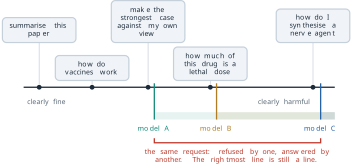
Three systems draw the boundary in three places, and every request between the leftmost and the rightmost boundary is refused by one and answered by another. §4.2 opened on the same divergence: one model family refuses some requests that another completes. A system that refuses almost nothing is often described as one that does not impose values. In the terms of Figure 7.20 it is a system whose boundary sits at the far right. The rightmost line is still a line, drawn by someone, and the decision about where it belongs is not settled by moving it to the edge.
Fairness as arithmetic
Arguments about the values in a model are often conducted as if they were matters of opinion alone. One of them can be settled with a table. It concerns a scoring tool rather than a language model, but the question it answers arises for any system that sorts people into two classes, a language model used to screen applications or flag essays included.
COMPAS (Correctional Offender Management Profiling for Alternative Sanctions), a product of the company Northpointe, assigns defendants a risk score for reoffending on a scale of one to ten. In May 2016 Jeff Larson, Surya Mattu, Lauren Kirchner and Julia Angwin of ProPublica published an analysis of the scores given to defendants in Broward County, Florida, in 2013 and 2014 (Larson et al. 2016). They followed the defendants for two years and recorded whether each was arrested again, defined as a new fingerprintable arrest with a criminal charge. Of the 7,214 defendants with two years of follow-up, 3,696 were Black and 2,454 were white; the other 1,064 belonged to smaller groups that the tables below leave out. ProPublica grouped the scores into Low and High, the latter covering the medium and high risk bands, and published the two contingency tables reproduced in Table 7.2.
| Black: Low | Black: High | White: Low | White: High | |
|---|---|---|---|---|
| Did not reoffend | 990 | 805 | 1,139 | 349 |
| Reoffended | 532 | 1,369 | 461 | 505 |
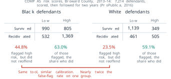
Three quantities can be read off each table. Write \(\mathrm{TP}\) for defendants scored High who reoffended, \(\mathrm{FP}\) for those scored High who did not, \(\mathrm{FN}\) for those scored Low who reoffended and \(\mathrm{TN}\) for those scored Low who did not.
Definition 7.7 (Definition) For a binary classifier applied to two groups, three group fairness criteria are in common use. Calibration, or predictive parity, requires equal positive predictive value, \(\mathrm{PPV} = \mathrm{TP}/(\mathrm{TP} + \mathrm{FP})\): of those flagged, the same share in each group have the outcome. Equal false-positive rates require equal \(\mathrm{FPR} = \mathrm{FP}/(\mathrm{FP} + \mathrm{TN})\): of those without the outcome, the same share in each group are flagged. Equal detection rates require equal \(\mathrm{TPR} = \mathrm{TP}/(\mathrm{TP} + \mathrm{FN}) = 1 - \mathrm{FNR}\), where FNR is the false-negative rate: of those with the outcome, the same share in each group are caught. The prevalence \(p = (\mathrm{TP} + \mathrm{FN})/n\) is the share of the group’s \(n\) members who have the outcome.
On Table 7.2 the three criteria give different verdicts. For Black defendants \(\mathrm{PPV} = 1369/2174 = 0.630\) and for white defendants \(505/854 = 0.591\), close to each other, and this equality of predictive value is the ground on which Northpointe defended the scores (Dieterich et al. 2016). The false-positive rates are \(805/1795 = 0.448\) and \(349/1488 = 0.235\): a Black defendant who did not reoffend was nearly twice as likely to have been scored High as a white defendant who did not. The detection rates are \(1369/1901 = 0.720\) and \(505/966 = 0.523\). ProPublica reported the false-positive gap, together with the matching gap in false-negative rates, 28.0 against 47.7 per cent, as evidence of bias. Northpointe replied that the scores were equally predictive for both groups, pointing to their calibration (Dieterich et al. 2016). Both parties read the same table correctly. The question is whether a better tool could satisfy both of them at once.
The answer follows from the definitions. From the definition of PPV, \(\mathrm{FP} = \mathrm{TP}\,(1 - \mathrm{PPV})/\mathrm{PPV}\). The number of group members who reoffended is \(np\), so \(\mathrm{TP} = np\,(1 - \mathrm{FNR})\), and the number who did not is \(n(1 - p)\). Dividing \(\mathrm{FP}\) by \(n(1 - p)\) gives
\[ \mathrm{FPR} = \frac{p}{1 - p} \cdot \frac{1 - \mathrm{PPV}}{\mathrm{PPV}} \cdot \bigl(1 - \mathrm{FNR}\bigr) . \tag{7.16}\]
Alexandra Chouldechova published this relation in the journal Big Data in 2017, in a study of recidivism prediction instruments that used the Broward data (Chouldechova 2017). Jon Kleinberg, Sendhil Mullainathan and Manish Raghavan proved a closely related result independently, presented at the Innovations in Theoretical Computer Science conference (ITCS) in 2017. Except when prediction is perfect or the groups have equal base rates, no risk score can be calibrated within each group and balanced for both the positive and the negative class at the same time (Kleinberg et al. 2017). Neither result needs anything about COMPAS beyond its contingency tables. They assume a binary decision, groups whose prevalence can be measured, and an outcome recorded the same way in both.
Equation 7.16 reads as the product of three factors: the odds of the outcome in the group, the selectivity of the flag, and the share of real cases it catches. Equal calibration fixes the middle factor across groups. If the prevalence differs, the first factor differs, and then the false-positive rate and the detection rate cannot both be equal. Something on the right has to move.
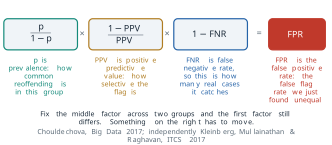
The identity reproduces the published rates from the published counts. For Black defendants the prevalence is \(1901/3696 = 0.514\), and
\[ \mathrm{FPR} = \frac{1901}{1795} \cdot \frac{805}{1369} \cdot \frac{1369}{1901} = 1.059 \times 0.588 \times 0.720 = 0.448 . \tag{7.17}\]
For white defendants the prevalence is \(966/2454 = 0.394\), and
\[ \mathrm{FPR} = \frac{966}{1488} \cdot \frac{349}{505} \cdot \frac{505}{966} = 0.649 \times 0.691 \times 0.523 = 0.235 . \tag{7.18}\]
The fractions cancel to \(805/1795\) and \(349/1488\), which is why the identity reproduces the measured rates exactly rather than approximately. The gap between the two false-positive rates is what three factors multiply to. The first factor is a property of the recorded outcomes in each group, and the third is a property of how well the tool detects them. The vendor moves the middle and third factors by choosing thresholds, and a change of threshold moves both of them at once.
A natural response is to equalise calibration properly, and it shows the force of the identity. Suppose white defendants are given the same PPV as Black defendants, 0.630, with their own prevalence and detection rate unchanged. The middle factor becomes \(805/1369 = 0.588\), and
\[ \mathrm{FPR}_{\text{white}} = 0.649 \times 0.588 \times 0.523 = 0.200 . \tag{7.19}\]
The false-positive rate of white defendants falls from 0.235 to 0.200, and that of Black defendants does not move. The gap widens from 21.4 to 24.9 percentage points. The tool has become fairer by the first criterion of Definition 7.7 and less fair by the second. Choosing a fairness criterion is choosing which factor of Equation 7.16 is allowed to differ between groups. It is arithmetic before it is philosophy, though the arithmetic does not say which choice is right.
The arithmetic also rests on an assumption that the table cannot check. The outcome in Table 7.2 is a recorded rearrest, not an offence. If one group is policed more heavily than another, its recorded prevalence is higher for reasons that have nothing to do with the tool, and the first factor of Equation 7.16 carries that difference into every criterion. The identity forces a choice among criteria. It does not certify the labels the criteria are computed on.
What cannot yet be read
Everything said so far about \(D\), \(R\) and \(P\) was established from outside the model, by comparing what goes in with what comes out. That is behavioural evaluation, and it is most of what is known about any deployed model. It does not open the weights. Mechanistic interpretability tries to, and it has moved. Adly Templeton and colleagues at Anthropic reported in May 2024 on sparse autoencoders trained on the activations of a middle layer of the production model Claude 3 Sonnet. The autoencoders decomposed the activations into features, many of which people could name. One responded to the Golden Gate Bridge in text and images, others to code errors or to deception (Templeton et al. 2024). The largest autoencoder had about 34 million features. Clamping a feature to a high value changed the model’s behaviour in the corresponding direction, which showed that the features were used and not merely correlated with the input. The assumption of the method is that the model’s superposed representation decomposes into sparse features that people can name, and the features found so far account for only part of the computation.
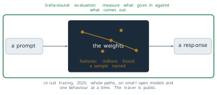
In 2025 the same group went from features to circuits. Emmanuel Ameisen and colleagues described attribution graphs, which trace how features in one layer contribute to features in later layers for a single prompt (Ameisen et al. 2025). Jack Lindsey and colleagues used them to follow several behaviours of Claude 3.5 Haiku, among them multi-step reasoning and planning a rhyme ahead of the line that ends on it (Lindsey et al. 2025). In May 2025 the method was released as an open library that builds attribution graphs for small open-weight models such as Gemma-2-2B and Llama-3.2-1B (Anthropic 2025). Each graph explains one behaviour on one prompt, and its authors report that much of the computation is left unexplained even then. Figure 7.23 shows the state honestly: the box is no longer wholly dark, and it is far from lit.
A second limit concerns measurement itself. §4.2 used benchmarks to compare model families, and a benchmark is published so that it can be used. Published, it is posted, quoted and mirrored across the web, and the next corpus is scraped from the web. A benchmark can therefore end up in the training data of the models it is meant to test, and a score can rise because the answers were seen rather than because the ability grew.
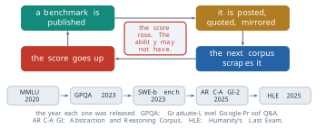
From outside, the two causes of a rising score look the same. Contamination is one reason benchmarks are retired, saturation by real progress is another, and a published score rarely says which applies. Massive Multitask Language Understanding (MMLU) was released in 2020 and published in 2021 (Hendrycks et al. 2021). GPQA (Graduate-Level Google-Proof Q&A), a set of questions written to resist web search (Rein et al. 2023), and SWE-bench, built from real software issues (Jimenez et al. 2024), followed in 2023. In 2025 came ARC-AGI-2, the second version of the Abstraction and Reasoning Corpus for Artificial General Intelligence (Chollet et al. 2025), and Humanity’s Last Exam, whose authors motivated it by the observation that models already exceeded 90 per cent accuracy on MMLU (Phan et al. 2025). The dates are the stable part of that record. Any score quoted beside them would be out of date within months, and the ruler itself is replaced on a similar timescale.
The third limit is the same loop one level up. Text generated by models is now published on the web, so the corpus from which the next model is trained contains the output of earlier ones. Ilia Shumailov and colleagues studied what this does in Nature in 2024 (Shumailov et al. 2024). When each generation of a model was trained on data produced by the previous generation, the tails of the original distribution disappeared first, and the defects were irreversible. They called the effect model collapse.
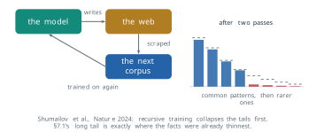
The mechanism is sampling. A pattern in the tail of a distribution is generated rarely, so it is the first to stop appearing in generated text, and then the first to stop appearing in the next corpus. §7.1 found that the tail is where a model is already weakest: accuracy falls with the number of supporting documents (Figure 7.5), and the facts stated once set the floor of Equation 7.4. A loop that removes the tail first removes support from exactly the region that was already failing. Shumailov’s experiments replaced the training data at each generation, and in their language-model experiments keeping a share of the original human data reduced the damage. The size of the effect for a real web, where generated and human text are mixed and the mix is not recorded, is not known, which is why the provenance of training text has become a practical concern for every laboratory.
What can be demanded
Neutrality was never available, but each hidden argument enters at a known stage, and a decision whose stage is known can be asked about. For each stage there is an artifact a reader, a buyer or a regulator can demand and check.
For the corpus, the artifact is documentation of what went in and what was filtered out. Timnit Gebru and colleagues proposed datasheets for datasets: a standard set of questions about the motivation, composition, collection and recommended uses of a dataset. The proposal circulated in 2018 and was published in Communications of the ACM in 2021 (Gebru et al. 2021). Emily Bender, Timnit Gebru, Angelina McMillan-Major and Margaret Mitchell, writing as Shmargaret Shmitchell, argued at the Conference on Fairness, Accountability, and Transparency (FAccT) in 2021 that a training corpus too large to document is a corpus whose contents nobody can answer for. Documentation, they argued, should be budgeted for from the start (Bender et al. 2021). The C4 audit of Figure 7.18 shows that the demand can be met, since it was met for a corpus that had already shipped. For the rankings, the artifact is the identity of the raters and the document they ranked against. A published constitution answers the second half of that demand. The first half, who ranked and how they were chosen and paid, is answered at present by an appendix where one exists. For the policy, the artifact is the system prompt and the refusal policy, written down. A simple case shows why. A model that answered a dosage question last month refuses it today, and its weights are byte for byte the same. Pre-training and alignment both write weights, so neither ran; the change was made at serving, and a written policy is the only record of it. For use, the artifact is a measured account of what the model can do. Margaret Mitchell and colleagues proposed model cards at the conference on Fairness, Accountability, and Transparency (FAT*) in 2019 (Mitchell et al. 2019): a short document reporting a model’s intended use and its performance broken down by the groups it will be used on, as Table 7.2 breaks down COMPAS. Across all four stages one further artifact helps: an evaluation that somebody outside the laboratory can run.
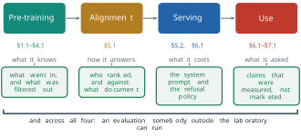
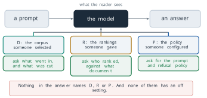
None of these demands is a claim about which values are correct. Each is the move an engineer makes before shipping any system: show the specification, show what was tested, show what was left out. The demand is methodological, not normative. It makes whichever values were chosen open to inspection, and Figure 7.27 is Figure 7.15 with that inspection added. The band at its foot is unchanged, and it should be. There is still no setting in which \(D\), \(R\) and \(P\) are absent.
Legibility has limits of its own. It does not produce agreement. Two people can read the same datasheet, the same constitution and the same model card and still want the refusal boundary of Figure 7.20 in different places. They can still disagree about which factor of Equation 7.16 should be allowed to differ. Making a choice visible does not make it agreed. A documented choice is also only as good as the documentation: a datasheet can omit, a model card can report the groups its authors thought of and not the ones a deployment meets, and an outside evaluation inherits the melting ruler of Figure 7.24. And three questions remain open with no documentation that could close them: most of the computation in the weights is still unread, the benchmarks used to measure progress are absorbed into the corpora they measure, and the corpus is now downstream of the models trained on it. Each of the three has an active research programme and none has an answer.
This is the last section of the book, and its subject is where the argument of the book ends. §1.1 began from a problem: text is a sequence of symbols whose meaning depends on context and on knowledge of the world that the symbols do not contain. Each section after it solved a problem and left another. Words were given geometry in §1.2, but no order. Recurrence gave order and lost the distant past, and attention gave the past back. The Transformer gave an architecture without an objective, and prediction of the next token gave the objective. Scale made prediction powerful without making it useful, alignment made it useful, efficiency made it affordable, and the context window made it programmable without retraining. §7.1 showed that the result is fluent and sometimes false, and this section that it is never neutral. Every part of the machine that this book set out to explain has now been built and its purpose stated, even where, as this section showed, what the trained weights compute cannot yet be read. What it is used for is decided outside it, in the context a user or a developer writes: the weights are frozen, but the context window is programmable.
Exercises
For each change in behaviour, name the hidden argument of Equation 7.12 that produced it and the lifecycle stage at which it entered, and say what evidence would confirm the answer. (a) A model answered a dosage question last month and refuses it today; its weights are byte for byte the same.
- A new release of a model writes fluent Swahili where the previous release could not, and the provider reports a change in the pre-training mix. (c) Two models built from the same pre-trained checkpoint answer a question about a contested political event in opposite tones. (d) A company’s assistant stops naming competitors’ products.
Using the Common Crawl shares of Figure 7.16, compute (a) the ratio of English pages to the pages of all other languages outside the five named ones, and (b) the ratio of English’s share of pages to its share of first-language speakers. (c) Explain, using Figure 7.5, why a language with a share of pages below one per cent is likely to be served worse than its number of speakers alone would suggest, and name one thing a corpus documentation would have to record for a reader to check this.
In a two-dimensional embedding, let he \(= (1, 0)\), she \(= (-1, 0)\), nurse \(= (-0.6, 0.8)\) and engineer \(= (0.6, 0.8)\). (a) Take the gender direction \(\mathbf{g}\) as the unit vector along he \(-\) she, and compute the component of nurse and of engineer along it. (b) Apply the projection of Equation 7.15 to both. (c) After the projection, are the two words still distinguishable? What does this say about why Gonen and Goldberg’s clustering result is possible only in more than two dimensions?
Verify the rates in Table 7.2. (a) Compute PPV, FPR and FNR for both groups from the counts, to three decimal places. (b) Compute the overall accuracy, \((\mathrm{TP} + \mathrm{TN})/n\), for each group. (c) Which of the three criteria of Definition 7.7 holds approximately, and which do not?
Derive Equation 7.16 from the definitions of PPV, FPR, FNR and \(p\), stating each step. Then rearrange it into an expression for \(\mathrm{PPV}/(1 - \mathrm{PPV})\).
Keep white defendants’ prevalence and detection rate as in Table 7.2. (a) What PPV would make their false-positive rate equal to Black defendants’, 0.448? (b) Is the tool then better or worse calibrated across the two groups than it is now? (c) What does Equation 7.16 say would have to change for all three criteria to hold together?
Two groups have prevalence 0.30 and 0.30, and a tool has the same PPV and the same FNR on both.
- Show from Equation 7.16 that the false-positive rates are then equal. (b) Show that if the prevalences are 0.30 and 0.50 instead, equal PPV and equal FNR force false-positive rates in the ratio \((0.5/0.5)/(0.3/0.7) = 7/3\). (c) Explain why this is the case of equal base rates that Kleinberg and colleagues exclude from their impossibility theorem.
A corpus has ten patterns whose frequencies are proportional to \(1, \tfrac{1}{2}, \tfrac{1}{3}, \ldots, \tfrac{1}{10}\). A model trained on it generates 100 samples, and the next corpus is those 100 samples alone. (a) What is the expected number of times the rarest pattern appears? (b) What is the probability that it does not appear at all, assuming independent draws? (c) Explain why, once a pattern is absent from one generation’s corpus, no later generation trained only on generated text can recover it, and relate this to the singleton rate of §7.1 (Equation 7.2), the share of training examples whose prompt appears exactly once. (d) Shumailov and colleagues found that keeping part of the original human data reduced the damage. Explain why, in terms of (b).